Sprint 0 — Fondations · story 1.2, 1.3, 1.5 et 1.6 — Contrat d’API et isolation des établissements (FR-002, FR-004, FR-007)
Chaque résidence chez elle, un seul contrat d’API
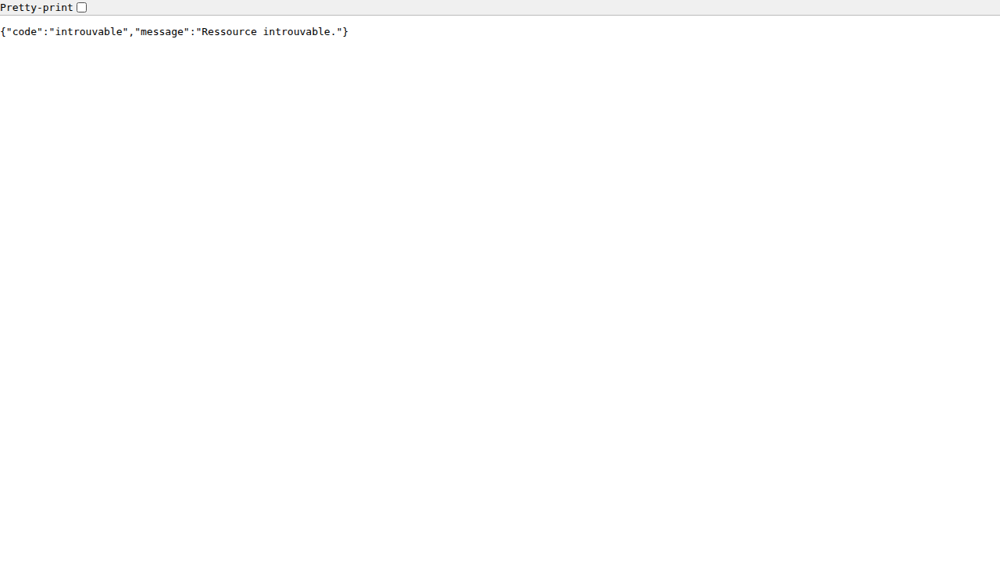
- 00s Connectée, la direction demande les données d’un autre établissement : réponse 404, la même que pour un identifiant inconnu. Rien ne fuit d’une résidence à l’autre.
- 08s Toute réponse suit le même contrat d’API, généré depuis le code : un champ inconnu est refusé, et chaque route est testée contre le contrat et contre l’isolation à chaque version.
Enregistré le 2026-11-07
Sprint 0 — Fondations · story 1.1 — Instanciation du kit et gates plancher verts à vide (FR-001)
Parcours de référence — la plateforme répond
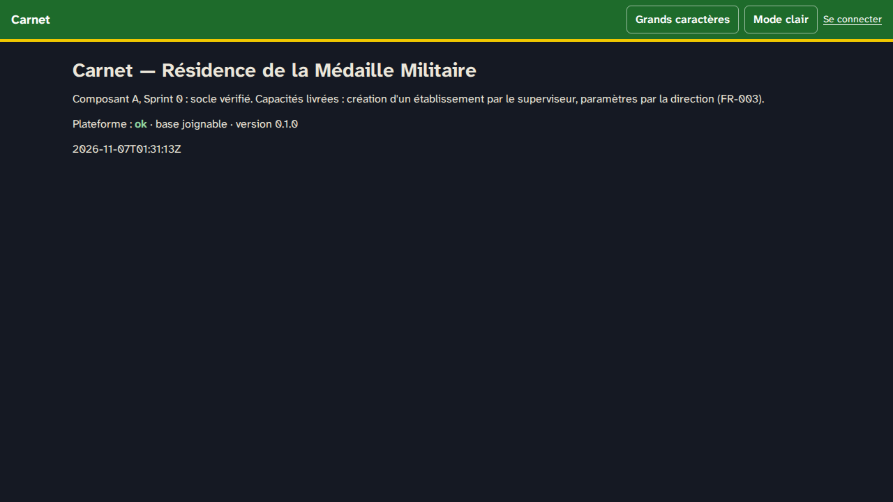
- 00s Carnet — Sprint 0, story 1.1 : le socle. Un clone, une commande, et la plateforme répond.
- 06s L'îlot Svelte interroge l'API uniquement par le client TypeScript généré depuis le contrat OpenAPI.
- 13s Tout ce qui suivra est vérifié par les mêmes gates : c'est la valeur du Sprint 0.
Enregistré le 2026-11-07
Sprint 0 — Fondations · story 1.4 et 2.1 — Création d'un établissement, activation du compte de la direction (FR-003, FR-008, FR-010)
Un établissement naît, sa direction en prend la main
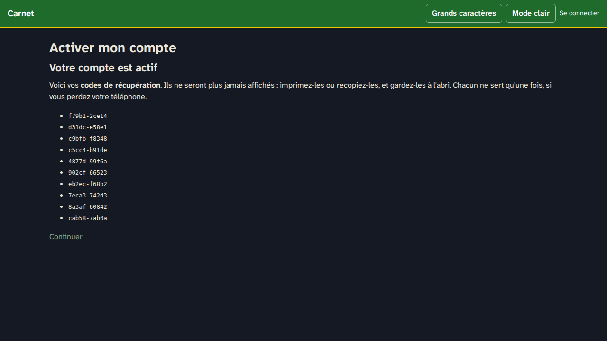
- 00s Le superviseur de plateforme crée un établissement — le tenant — et invite sa direction. Aucun mot de passe ne transite par lui.
- 17s Invitation envoyée par courriel : un lien personnel, à usage unique, valable 72 heures. (Données fictives.)
- 25s La directrice ouvre le lien et choisit sa phrase de passe : 12 caractères au moins.
- 34s Elle scanne le QR code avec son application d'authentification : le second facteur est obligatoire pour tout le personnel.
- 43s Compte actif. Dix codes de récupération sont remis une seule fois, pour le jour où le téléphone se perd.
- 56s Paramètres enregistrés avec horodatage et auteur. Une modification fondée sur une version périmée serait refusée : rien ne s'écrase.
Enregistré le 2026-11-07
Sprint 0 — Fondations · story 1.7 — Espaces et logements de l'établissement (FR-005)
Le référentiel des chambres, logements et espaces communs
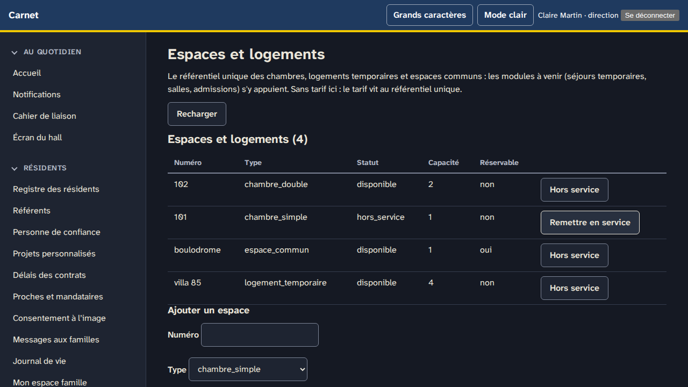
- 00s Une seule liste des chambres, logements temporaires et espaces communs — celle que liront les séjours, les salles et les admissions.
- 13s Import CSV : la villa 85 (4 personnes, sans tarif : il vit au référentiel unique), le boulodrome réservable.
- 22s Un fichier avec un numéro déjà pris : tout l'import est refusé, rien n'est créé à moitié.
- 30s La chambre 101 passe hors service ; le changement est tracé avec son auteur.
Enregistré le 2026-11-07
Sprint 0 — Fondations · story 2.5 et 2.1 — Journal d'audit et comptes du personnel (FR-012, FR-008)
Qui a fait quoi, et chacun son compte
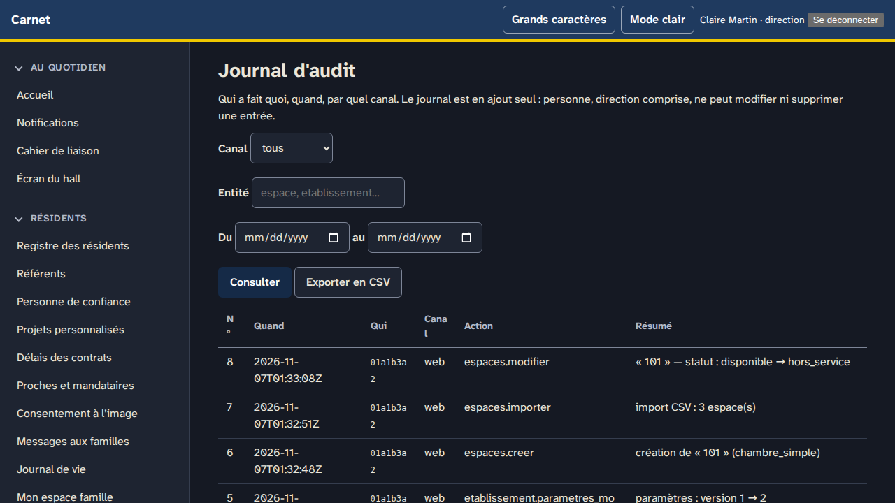
- 00s Le journal d'audit : chaque écriture, avec son auteur, son heure et son canal. Personne, direction comprise, ne peut le modifier.
- 08s La direction invite l'accueil : chacun son compte, chaque action attribuée à une personne.
- 20s Déconnexion, puis reconnexion : mot de passe, puis le code à 6 chiffres du téléphone.
- 34s Session ouverte pour 12 heures, cookie protégé ; un accès depuis un autre établissement répondrait « introuvable ».
Enregistré le 2026-11-07
Sprint 1 — Contenu public · story 3.8 — Diffusion du référentiel et contrôle de cohérence (FR-019)
Un tarif, une seule saisie : le contrôle avant le gate
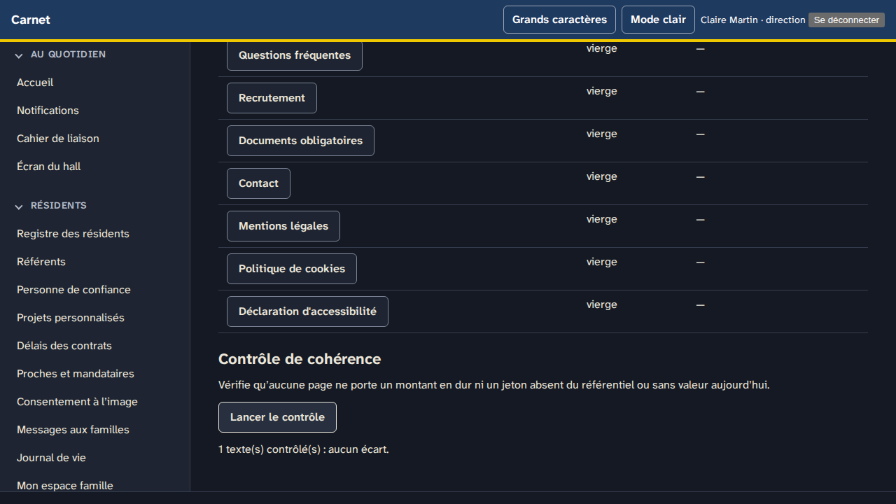
- 00s Un tarif saisi une fois au référentiel s’affiche partout par son jeton ; il change sur le site le jour de sa date d’effet.
- 08s Le contrôle de cohérence repère tout montant saisi en dur et tout jeton sans valeur : zéro écart attendu avant le gate.
Enregistré le 2026-11-07
Sprint 1 — Site et référentiel · story 3.7, 3.3 et 3.4 — Référentiel unique, pages du site, médiathèque (FR-018, FR-014, FR-015)
Un tarif saisi une fois, partout juste
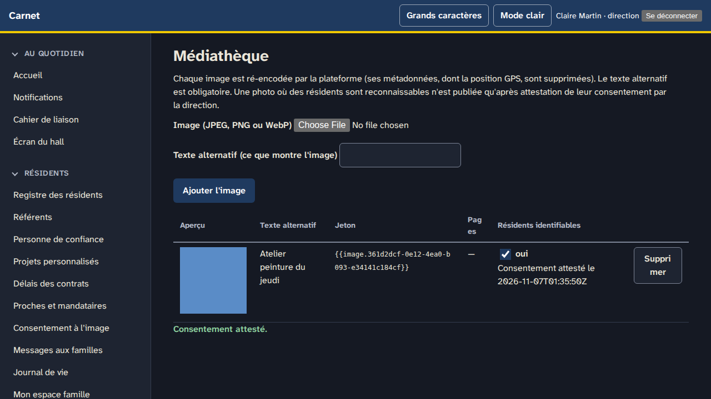
- 00s Le référentiel unique : chaque tarif, horaire ou contact se saisit une seule fois, avec sa date d’effet.
- 22s La semaine de la villa 85 vit ici aussi : le devis en ligne la lira, sans copie (valeurs fictives).
- 34s Un montant écrit en dur dans une page est refusé : il serait faux le jour où le tarif change.
- 45s On insère le jeton du référentiel : l’aperçu affiche la valeur du jour.
- 60s Médiathèque : texte alternatif obligatoire, image ré-encodée sans ses métadonnées (dont la géolocalisation).
- 68s Des résidents sont reconnaissables : la photo est bloquée tant que la direction n’a pas attesté leur consentement.
- 76s Consentement attesté, tracé : la photo peut paraître sur le site.
Enregistré le 2026-11-07
Sprint 1 — Socle · story ADR-017 — Registre des résidents (identité et chambre, sans donnée de santé)
Le registre des résidents : un nom, une chambre, rien de médical
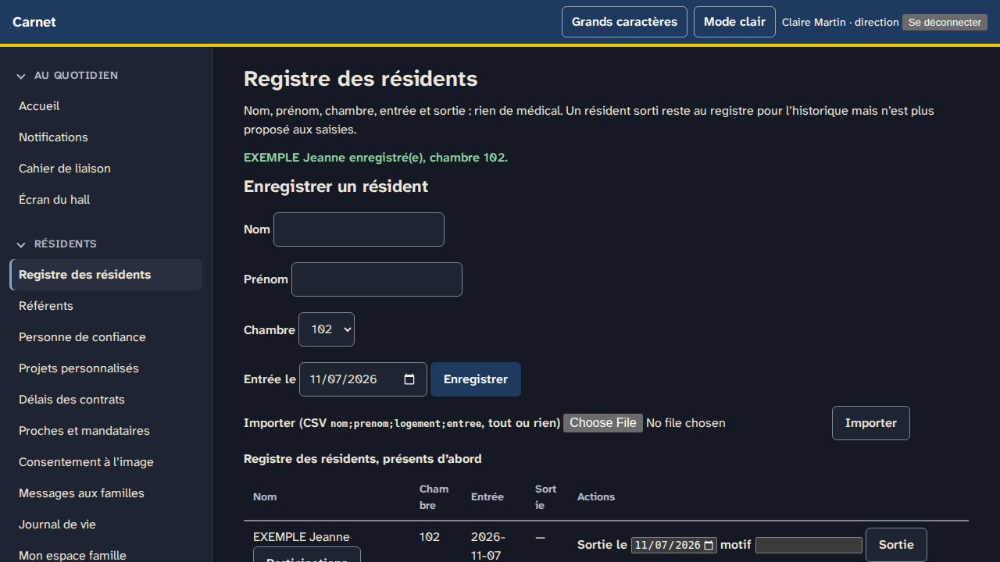
- 00s L’accueil enregistre chaque résident : nom, prénom, chambre, date d’entrée. Rien de médical : la santé reste sur le poste local.
- 10s Une chambre ne reçoit pas plus de résidents que ses places ; l’import du registre est tout ou rien, et un résident sorti reste dans l’historique.
Enregistré le 2026-11-07
Sprint 1 — Site et référentiel · story 3.1, 3.2, 3.5 et 3.6 — Site public statique, valeurs du jour, accessibilité, recrutement (FR-013, FR-016, FR-017)
Le site de la résidence, toujours à jour
- 00s Le site public : des pages statiques, sans cookie ni traceur, accessibles (audit RGAA automatique à chaque livraison).
- 09s Seules les valeurs du jour viennent de la plateforme : le tarif saisi au référentiel s’affiche ici. Textes du site provisoires.
- 25s L’offre paraît sur le site ; un visiteur candidate sans compte, CV en PDF seulement.
- 39s Accusé de réception immédiat ; la candidature sera purgée automatiquement deux ans après la clôture.
Enregistré le 2026-11-07
Sprint 10 — Conformité · story 10.2 — Accusés de lecture d’une version en vigueur (FR-022)
Prouver la remise du document, sans écran pour le résident
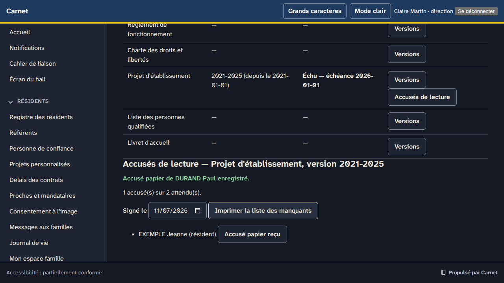
- 00s Le document est remis sur papier, le résident signe ; l’accueil saisit l’accusé. La direction voit qui manque.
- 08s Une nouvelle version repart de zéro ; les anciens accusés restent attachés à l’ancienne. La liste des manquants s’imprime.
Enregistré le 2026-11-07
Sprint 10 — Conformité · story 10.6 — Formulaire de désignation de la personne de confiance (FR-026)
Le résident signe sur papier, l’accueil saisit : une seule personne de confiance active
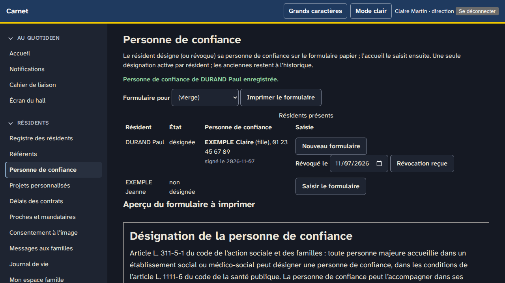
- 00s Le formulaire s’imprime en grands caractères, avec les mentions légales. Le résident le remplit et le signe avec la personne désignée.
- 08s Un nouveau formulaire remplace l’ancien, qui reste à l’historique ; une révocation signée se saisit d’un clic. Rien de médical n’est enregistré.
Enregistré le 2026-11-07
Sprint 10 — Conformité · story 10.5 — Suivi des délais contractuels (FR-025)
Remise à 15 jours, signature à 1 mois, avenant à 6 mois : sans les suivre de mémoire
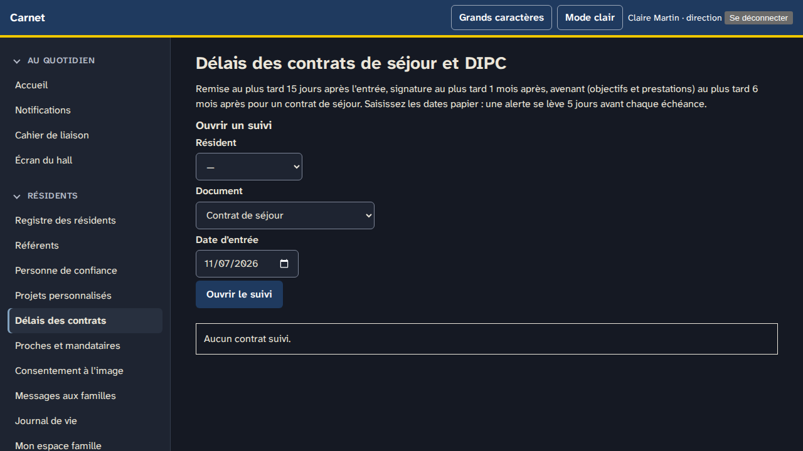
- 00s À l’ouverture du suivi, les trois échéances du CASF sont calculées depuis la date d’entrée ; un DIPC n’a que la remise et la signature.
- 06s Chaque date papier saisie satisfait son échéance. Cinq jours avant, la responsable administrative et la direction sont alertées.
Enregistré le 2026-11-07
Sprint 10 — Conformité · story 10.17 — Projets personnalisés : rappels et avenants (FR-222)
Ne manquer aucune échéance du projet personnalisé
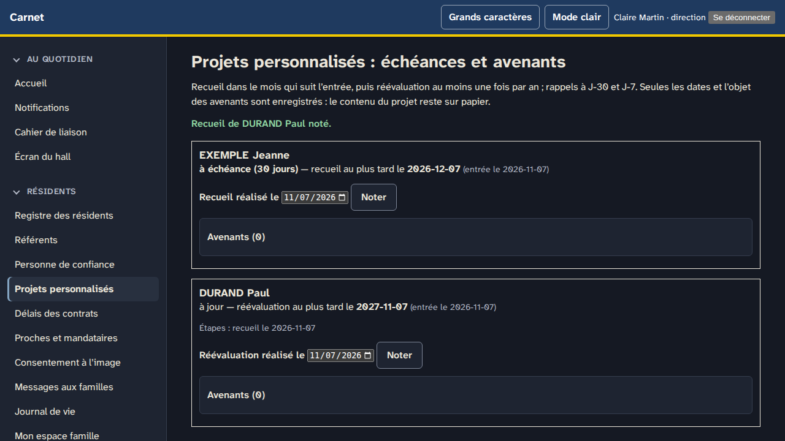
- 00s Pour chaque résident : recueil dans le mois de l’entrée, puis réévaluation chaque année. Les plus urgents en tête ; l’animatrice reçoit un rappel à J-30 et à J-7.
- 07s La prochaine échéance se recalcule. Les avenants sont tracés par leur date et un objet court : le contenu du projet reste sur papier.
Enregistré le 2026-11-07
Sprint 11 — Plateforme · story 1.13 — Modules activables par établissement (FR-324)
Chaque résidence n’active que ce qu’elle utilise
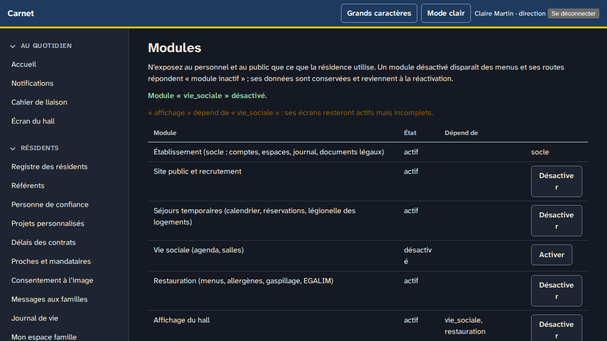
- 00s Séjours temporaires, restauration, familles, qualité… La direction active les modules utilisés ; le socle reste toujours là.
- 08s Un module désactivé disparaît des menus et ses routes se ferment ; ses données reviennent intactes à la réactivation.
Enregistré le 2026-11-07
Sprint 11 — Plateforme · story 1.12 — Personnalisation visuelle par établissement (FR-323)
Aux couleurs de la résidence, sans sacrifier la lisibilité
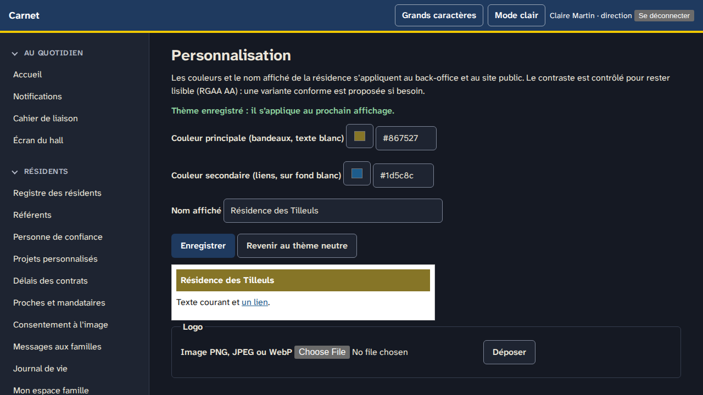
- 00s La direction choisit les couleurs et le nom affiché de la résidence.
- 10s Un jaune trop clair ne se lit pas sous un texte blanc : la plateforme propose la variante conforme la plus proche.
- 19s Le back-office et le site public prennent les couleurs de la résidence ; un clic ramène au thème neutre.
Enregistré le 2026-11-07
Sprint 2 — Conformité documentaire · story 10.1 et 10.9 — Documents légaux versionnés, documents obligatoires publiés (FR-021, FR-028)
Une seule version en vigueur, publiée d’office
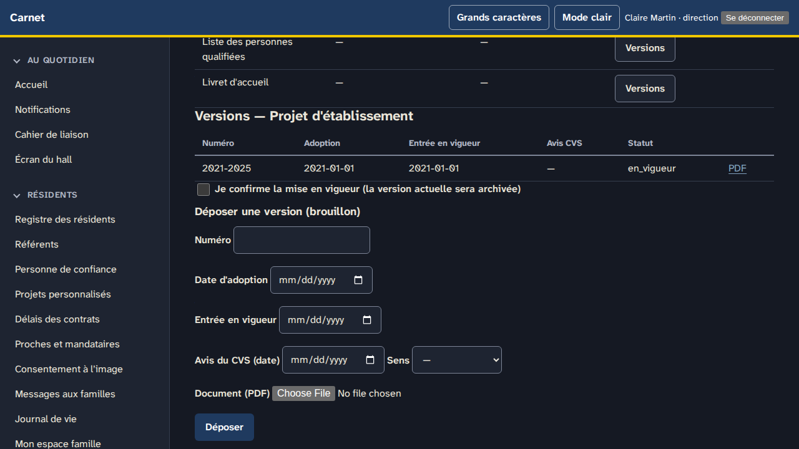
- 00s Règlement, livret, charte, projet d’établissement : chaque document a ses versions, une seule est en vigueur.
- 15s Le projet 2021-2025 est en vigueur… et signalé échu : son renouvellement quinquennal est dépassé.
- 24s Sur le site, chaque document obligatoire a une adresse stable qui sert toujours la version en vigueur.
Enregistré le 2026-11-07
Sprint 3 — Mesure et projet · story 10.10 et 10.11 — Relevé chronométré et tableau avant/après (FR-029, FR-030)
Combien d’heures l’outil rend à l’accueil
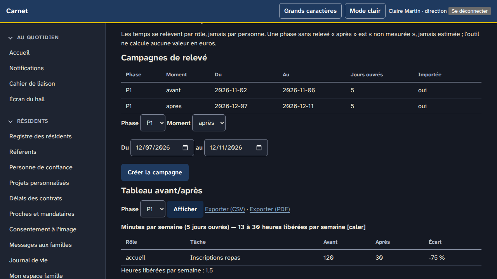
- 00s La preuve de valeur se mesure : temps relevés par rôle, jamais par personne, avant puis après l’outil.
- 18s Import en deux temps : un aperçu d’abord, rien n’est enregistré sans confirmation.
- 39s Tableau avant/après : heures libérées par semaine, sans aucune valorisation en euros (données fictives).
Enregistré le 2026-11-07
Sprint 2 — Conformité documentaire · story 3.9 — Plaquettes générées depuis le référentiel (FR-020)
La plaquette du séjour temporaire, à jour en un clic
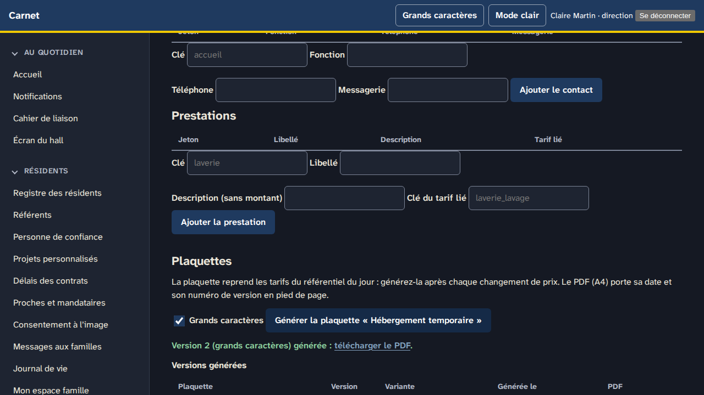
- 00s Plus de plaquette retouchée à la main : l’accueil la génère depuis le référentiel, avec les tarifs du jour (ici la villa 85, valeurs fictives).
- 08s Un PDF A4 sort, avec sa date et son numéro de version en pied de page ; il est rangé dans l’espace privé de la résidence.
- 17s La même plaquette en grands caractères, noir sur blanc ; chaque version reste téléchargeable. Sans tarif d’hébergement saisi, la génération est refusée plutôt que d’imprimer une plaquette trouée.
Enregistré le 2026-11-07
Sprint 3 — Mesure et projet · story 10.7 et 10.8 — Projet d’établissement : rubriques, fiches actions, indicateurs (FR-027)
Le projet d’établissement, rubrique par rubrique
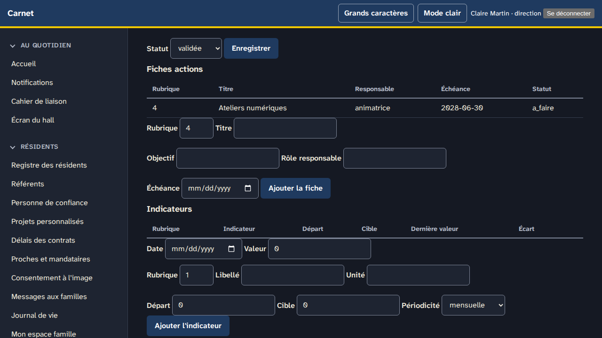
- 00s Treize rubriques à rédiger, chacune avec son état ; une rubrique validée puis modifiée redevient « en cours », c’est tracé.
- 18s Une fiche action : un objectif, un rôle responsable — jamais une personne — et une échéance dans la période.
Enregistré le 2026-11-07
Sprint 4 — Séjours temporaires · story 4.1 et 8.1 — Calendrier des logements temporaires, relevés légionelle (FR-100, FR-108)
Le calendrier des logements, et l’eau qui doit être sûre
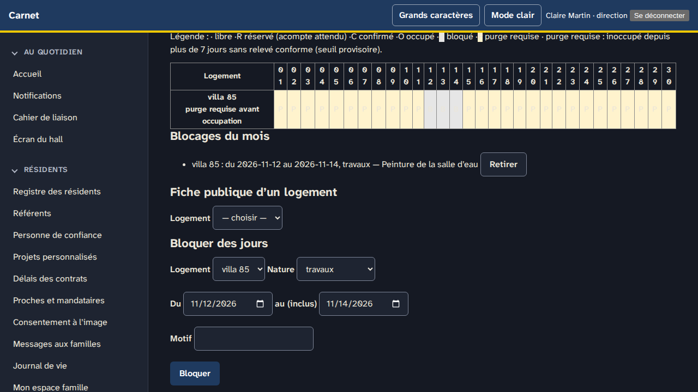
- 00s Un état par jour et par logement, écrit en toutes lettres. La villa, jamais purgée, porte « purge requise ».
- 12s Blocage motivé, journalisé ; deux blocages ne se chevauchent jamais, la base le garantit même à la seconde près.
- 21s Relevés légionelle : saisis en direct ou recopiés de la fiche papier, avec l’agent qui a relevé.
- 35s 45 °C à l’eau chaude : non conforme, la direction est alertée. Un relevé ne se corrige jamais ; il s’annule avec un motif.
Enregistré le 2026-11-07
Sprint 4 — Séjours temporaires · story 4.2, 4.3, 4.4 et 4.5 — Disponibilités publiques, photos, devis, réservation en ligne (FR-101 à FR-104)
Réserver la villa en ligne, sans téléphone
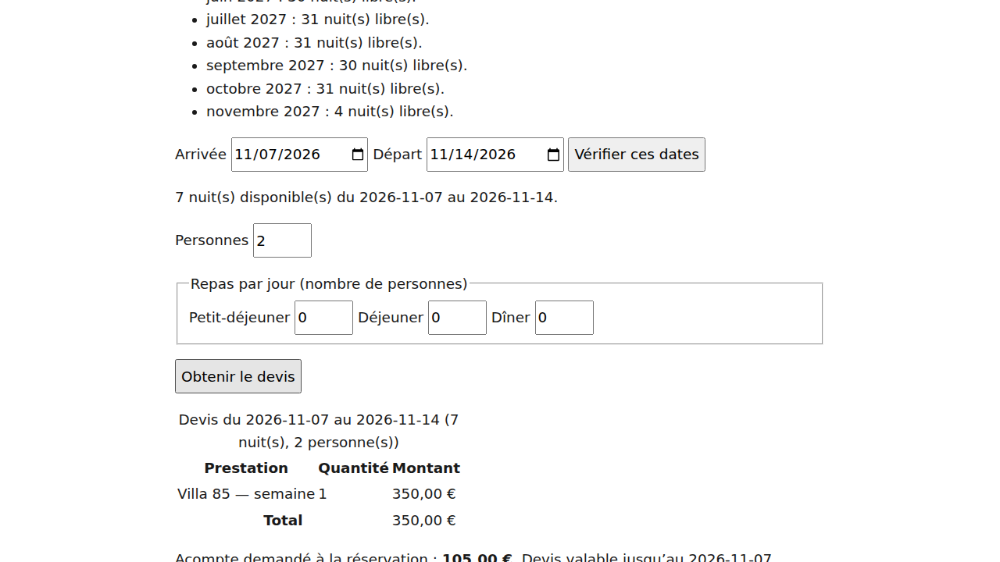
- 00s La direction publie la villa : à la semaine, du samedi au samedi, avec ses vraies photos et son tarif du référentiel.
- 10s Un visiteur, sans compte, voit les nuits libres sur douze mois — ni nom, ni motif de blocage.
- 23s Devis immédiat, calculé par le serveur depuis le référentiel : aucun prix ne vient du navigateur.
- 36s Les nuits sont gardées 30 minutes en attendant l’acompte ; le client relit sa réservation par un lien secret reçu par courriel.
Enregistré le 2026-11-07
Sprint 4 — Séjours temporaires · story 4.7 et 4.8 — Gestion des réservations par l’accueil, notifications (FR-105, FR-106)
L’accueil confirme, la cuisine est prévenue
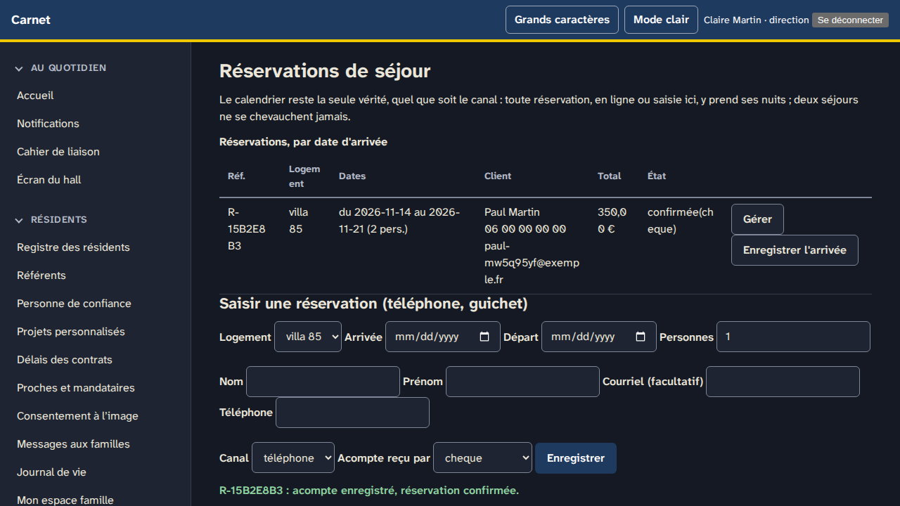
- 00s L’accueil voit toutes les réservations, quel que soit le canal ; les coordonnées ne sont déchiffrées que pour lui.
- 10s Acompte reçu par chèque : la réservation est confirmée, sans prestataire de paiement. Modifier ou annuler suit le même chemin.
- 19s Chaque rôle reçoit ce qui le concerne : l’accueil sans nom de client, la cuisine les seuls comptes de repas — jamais de santé.
Enregistré le 2026-11-07
Sprint 4 — Séjours temporaires · story 8.2 — Contrôle légionelle bloquant avant occupation (FR-109)
Pas d’arrivée sans purge
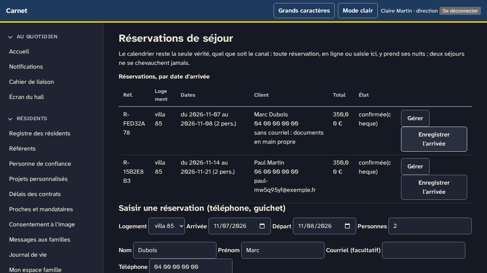
- 00s Un séjour pris au guichet arrive aujourd’hui dans la villa, inoccupée depuis longtemps et jamais purgée.
- 08s Arrivée bloquée : purge manquante. La direction est alertée ; seule elle pourrait lever le blocage, avec un motif.
- 22s La maintenance purge et saisit un relevé conforme…
- 30s … et l’arrivée est enregistrée : les nuits passent « occupé » au calendrier.
Enregistré le 2026-11-07
Sprint 5 — Vie sociale · story 5.1 — Agenda des activités sur 15 jours (FR-110)
Le planning des animations, une seule source
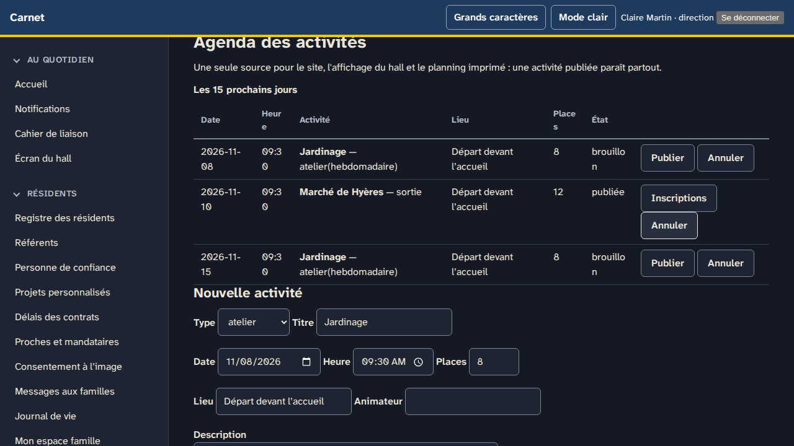
- 00s L’agenda remplace le planning papier du bureau : animations, ateliers et sorties sur 15 jours glissants.
- 21s Un atelier hebdomadaire : une occurrence par semaine, chacune aura ses propres inscriptions.
- 32s Publiée, la sortie paraît sur le site ; les brouillons restent au bureau. Le hall et le planning imprimé suivront la même source.
Enregistré le 2026-11-07
Sprint 5 — Vie sociale · story 5.5 — Rendez-vous coiffure (FR-114)
Le jeudi de la coiffeuse, sans un coup de téléphone perdu
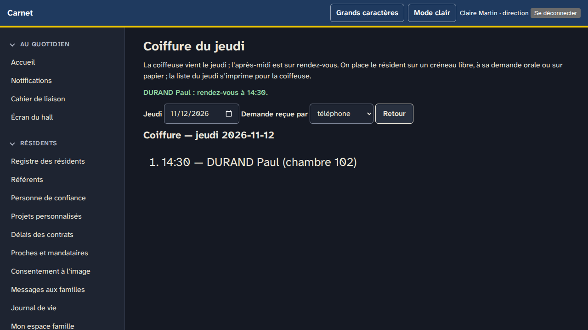
- 00s Le jeudi après-midi, créneau par créneau : Madame Exemple a demandé un rendez-vous à l’accueil.
- 10s La coiffeuse n’a pas de compte : la liste du jeudi s’imprime, heure, nom et chambre. Un jeudi fermé liste ses rendez-vous à reporter.
Enregistré le 2026-11-07
Sprint 5 — Vie sociale · story 5.7 — Affichage du hall (FR-116)
L’écran du hall, sans téléphone ni compte
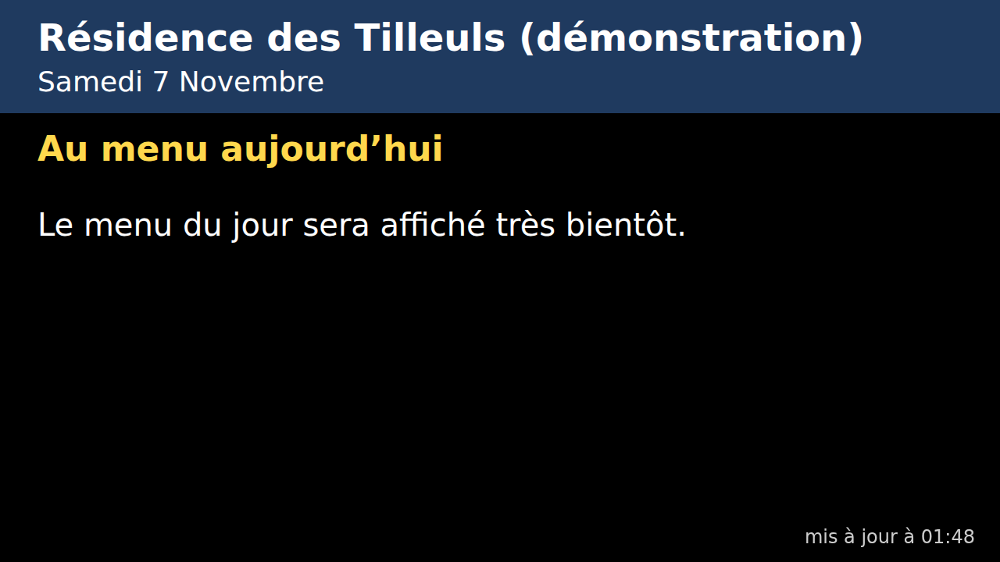
- 00s L’animatrice crée le lien de l’écran du hall : un jeton secret, révocable, en lecture seule.
- 12s Sur l’écran : le menu du jour avec ses allergènes, les activités de la semaine, les messages. En grands caractères, sans son ni défilement, et rien de nominatif.
Enregistré le 2026-11-07
Sprint 5 — Vie sociale · story 5.2 — Inscription d’un résident par un référent (FR-111)
Le résident s’inscrit sans toucher un écran
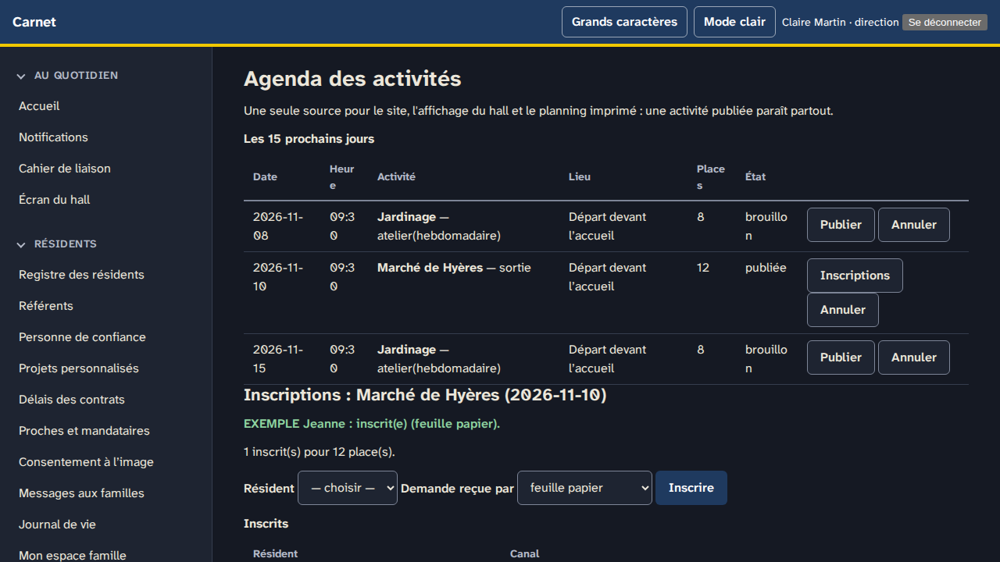
- 00s Madame Exemple a coché la sortie au marché sur sa feuille papier. L’animatrice ouvre les inscriptions de l’activité.
- 11s L’inscription garde son canal (papier, téléphone, voix…), son auteur et son heure. Complète, la sortie ouvre une liste d’attente ; un désistement promeut le suivant, « à prévenir ».
Enregistré le 2026-11-07
Sprint 5 — Vie sociale · story 5.3 — Places et liste d’attente (FR-112)
Plus personne n’arbitre à la main qui part en sortie
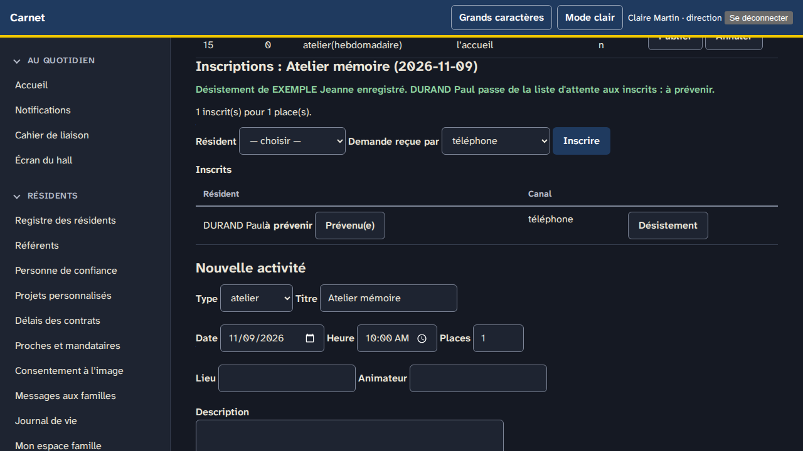
- 00s Une seule place : Monsieur Durand passe en liste d’attente, jamais au-delà des places.
- 08s Madame Exemple se désiste : Monsieur Durand prend la place, marqué « à prévenir ». Une fois prévenu, l’animatrice l’indique.
Enregistré le 2026-11-07
Sprint 5 — Vie sociale · story 5.4 — Navette liée aux sorties (FR-113)
Le minibus du mercredi, une place par résident, une feuille pour le conducteur
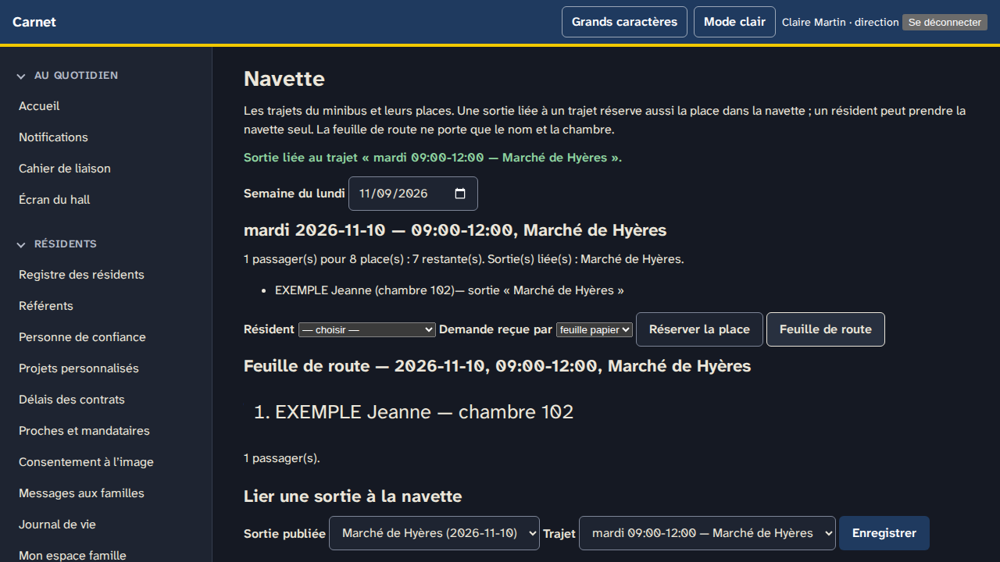
- 00s L’accueil paramètre les trajets du minibus et leurs places, comme dans le livret d’accueil.
- 14s La sortie au marché est liée au trajet du jour : chaque inscrit y a sa place, sans double saisie.
- 24s La feuille de route du conducteur : nom et chambre en grands caractères, rien d’autre.
Enregistré le 2026-11-07
Sprint 5 — Vie sociale · story 5.8 — Historique de participation agrégé (FR-117)
Documenter l’animation sans ficher les habitudes des résidents
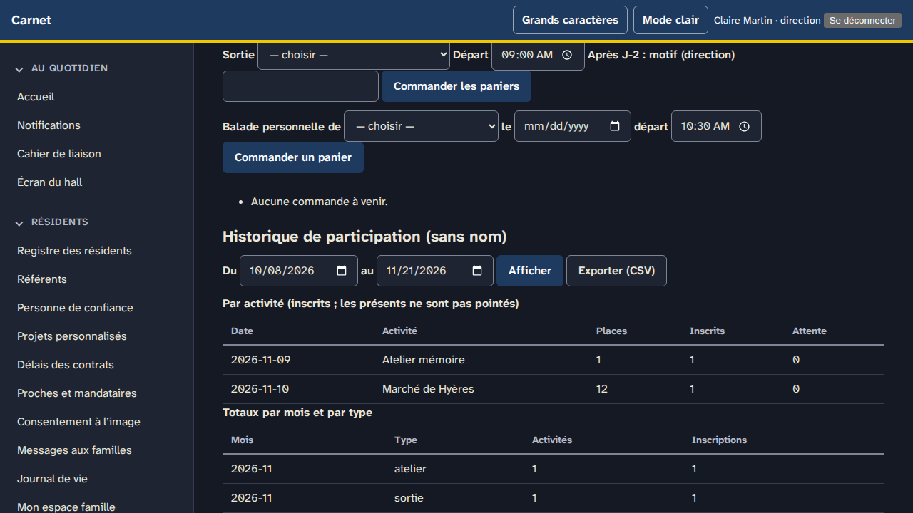
- 00s Pour le projet d’établissement et le forfait autonomie : des comptages par activité, par type et par mois — aucun nom. Le détail d’un résident, pour son projet personnalisé, est réservé et journalisé.
Enregistré le 2026-11-07
Sprint 5 — Vie sociale · story 5.9 — Planning et feuilles d’inscription papier (FR-118)
Le planning papier, toujours là pour qui n’a pas d’écran
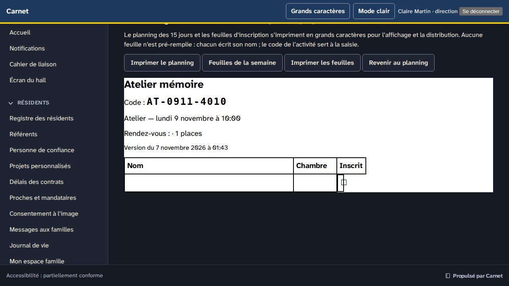
- 00s Le planning des 15 jours s’imprime en grands caractères pour le panneau et la distribution, avec la date de sa version.
- 08s La feuille d’inscription : titre, date, rendez-vous, places et un code lisible pour la saisie ; chacun y écrit son nom, rien n’est pré-rempli.
Enregistré le 2026-11-07
Sprint 5 — Vie sociale · story 5.6 — Réservation des salles et du boulodrome (FR-115)
Une salle, un créneau, pas de double usage
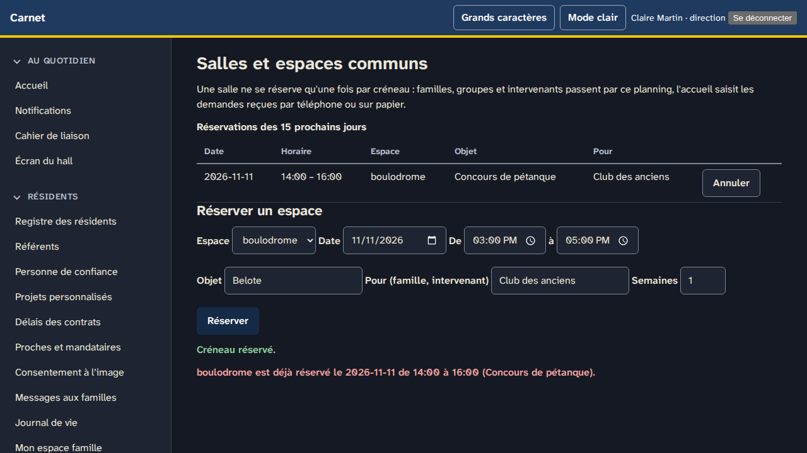
- 00s Salles, boulodrome, salon TV : un seul planning pour les animations, les familles et les intervenants.
- 19s Le même créneau ne se prend pas deux fois — la base le garantit. Un créneau qui commence à la fin d’un autre, oui.
- 39s Une activité publiée réserve sa salle d’elle-même ; annulée, elle la libère.
Enregistré le 2026-11-07
Sprint 6 — Restauration · story 6.2 — Absences aux repas (FR-120)
La famille appelle : la cuisine compte un couvert de moins
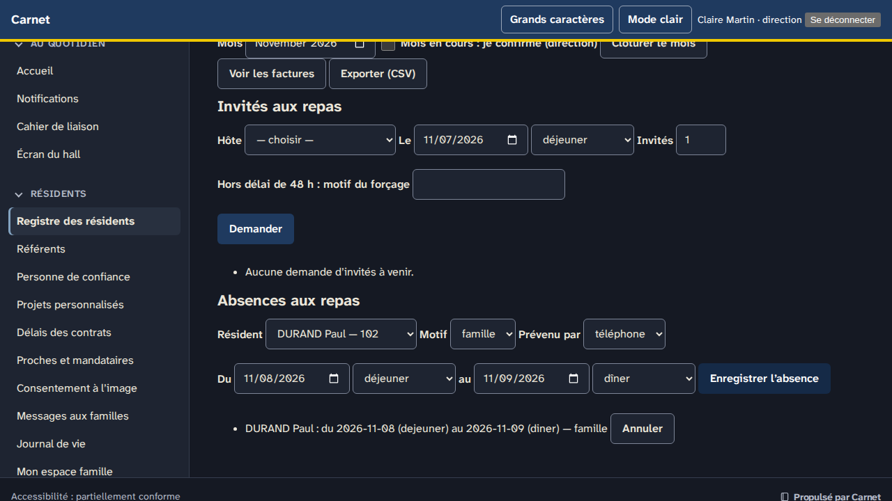
- 00s La fille de Madame Exemple appelle : elle emmène sa mère du déjeuner de demain au dîner du lendemain.
- 13s Motif famille, sortie ou autre : jamais de santé. Le canal « téléphone » et l’auteur sont journalisés ; la cuisine ne verra que des nombres.
Enregistré le 2026-11-07
Sprint 6 — Restauration · story 6.6 — Récapitulatif des couverts J+1 sans nom (FR-124)
Demain, combien d’assiettes ? Des nombres, jamais des noms
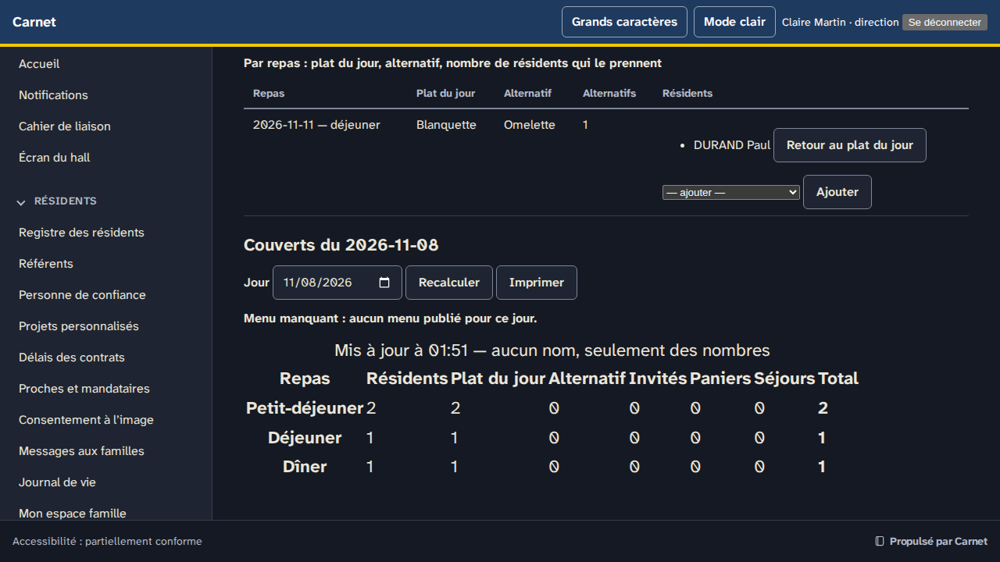
- 00s Chaque jour, la cuisine lit les couverts du lendemain : résidents présents, plats du jour et alternatifs, invités, paniers, séjours — uniquement des nombres. Les régimes restent sur son carnet papier.
Enregistré le 2026-11-07
Sprint 6 — Repas · story 6.8 — EGALIM : origine et part des produits durables (FR-126)
Les taux EGALIM, calculés au fil des achats
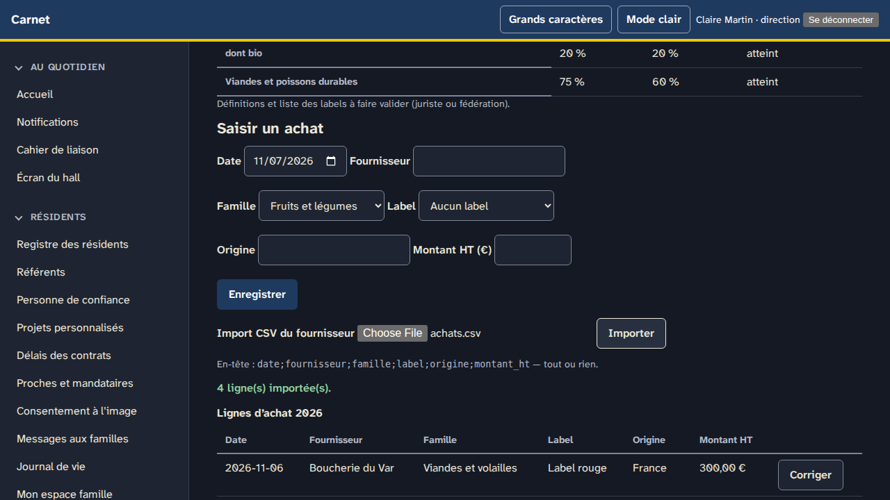
- 00s La cuisine saisit ses achats, ou importe le fichier du fournisseur : famille, label, origine, montant.
- 09s Les taux de l’année se recalculent face aux seuils : 50 % de produits durables dont 20 % bio, 60 % des viandes et poissons. Les montants restent réservés à la direction.
Enregistré le 2026-11-07
Sprint 6 — Repas · story 6.7 — Suivi du gaspillage par pesées (FR-125)
Peser les restes pour moins jeter
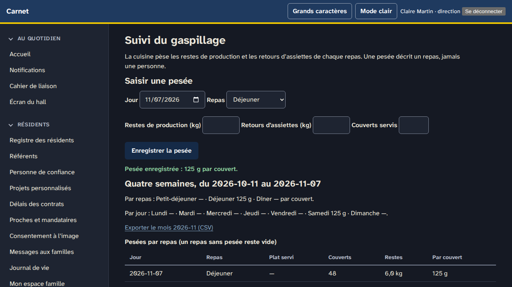
- 00s Après le service, la cuisine pèse les restes de production et les retours d’assiettes.
- 12s Le ratio par couvert se calcule aussitôt ; la pesée est journalisée et ne concerne qu’un repas, jamais une personne.
- 19s Sur quatre semaines : la tendance par repas, par jour et les plats les plus jetés. Un repas non pesé reste vide, sans estimation. Export CSV pour la mesure avant/après.
Enregistré le 2026-11-07
Sprint 6 — Restauration · story 6.4 — Invités aux repas (48 h) (FR-122)
Déjeuner avec sa mère, au bon prix, sans négocier le délai
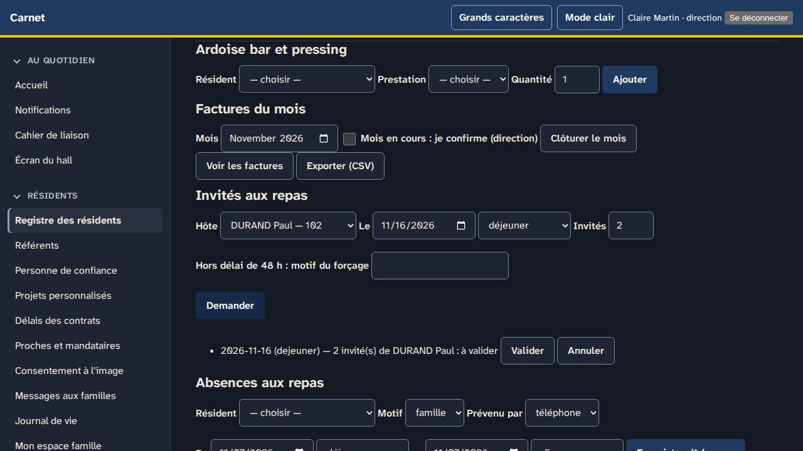
- 00s Le fils de Madame Exemple veut déjeuner avec elle dimanche en huit, à deux. L’accueil saisit la demande.
- 11s Le prix vient du référentiel unique. Moins de 48 h avant le repas, la demande est refusée avec la première date possible — sauf forçage motivé, et la cuisine est alors prévenue.
Enregistré le 2026-11-07
Sprint 6 — Restauration · story 6.10 — Export Ma Cantine (FR-128)
Ma Cantine sans ressaisie, et sans rien envoyer à sa place
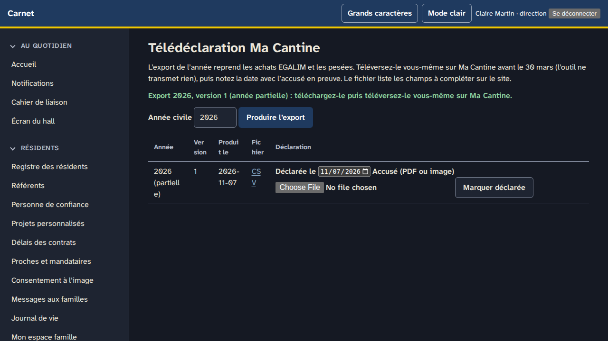
- 00s Avant le 30 mars, la direction produit l’export de l’année depuis les achats EGALIM et les pesées.
- 09s Chaque export est une version conservée. La direction le téléverse elle-même, puis note la date avec l’accusé en preuve ; un rappel arrive le 1er mars si rien n’est déclaré.
Enregistré le 2026-11-07
Sprint 6 — Restauration · story 6.5 — Paniers balade (FR-123)
Les paniers du marché, comptés d’après les inscrits
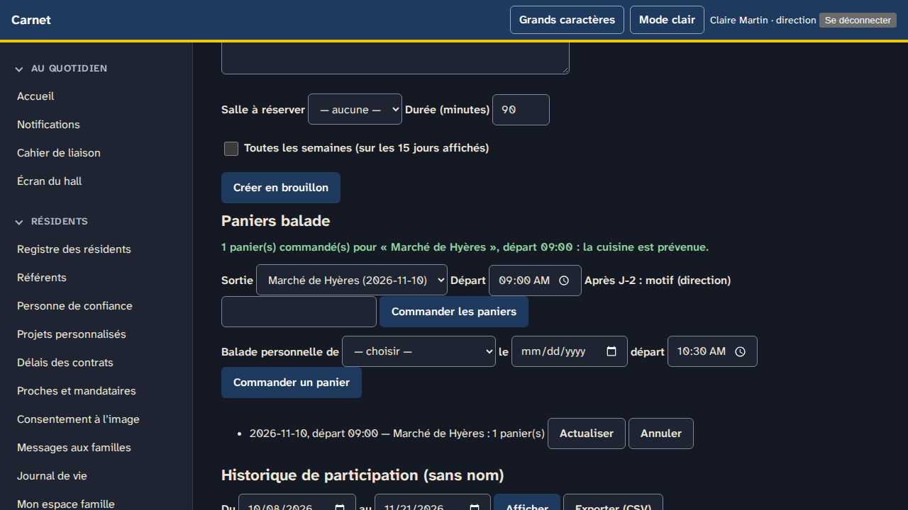
- 00s La sortie au marché part à 9 h : l’animatrice commande les paniers, autant que d’inscrits.
- 09s La cuisine reçoit « N paniers, départ 9 h » : ni nom ni régime. Un désistement ? On actualise, la cuisine reçoit l’écart.
Enregistré le 2026-11-07
Sprint 7 — Services · story 7.2 — Ardoise bar et pressing (FR-201)
L’ardoise du bar, au prix du référentiel, sans carte ni relevé manuel
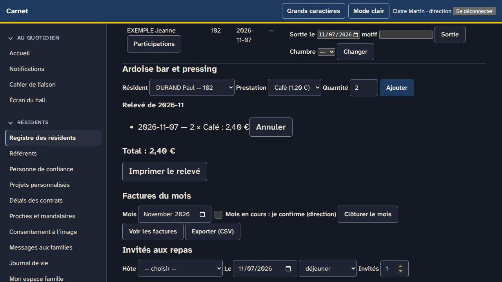
- 00s Madame Exemple prend deux cafés au bar : l’accueil les porte sur son ardoise du mois.
- 09s Le prix vient du référentiel unique, copié à la saisie. Une erreur ? La ligne s’annule avec motif, elle ne disparaît jamais. Le relevé s’imprime en grands caractères.
Enregistré le 2026-11-07
Sprint 7 — Services et maintenance · story 7.6 — Registre des événements indésirables (FR-205)
Les incidents tracés, sans aucune donnée médicale
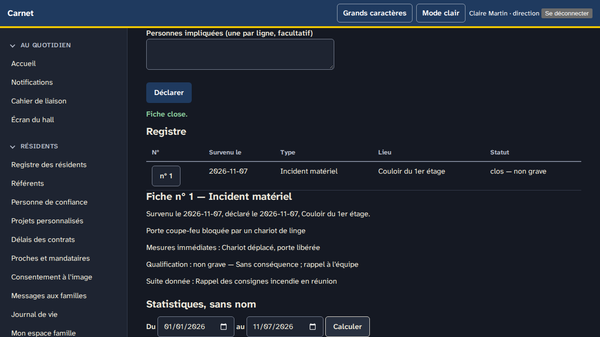
- 00s Une porte coupe-feu est bloquée par un chariot : l’agent le déclare, avec ce qu’il a fait tout de suite.
- 12s La fiche est numérotée, la direction est prévenue. Aucun champ ne permet de saisir un soin ou un diagnostic.
- 24s La direction qualifie, clôt, et compte les événements par mois et par type, sans nom, pour le CVS.
Enregistré le 2026-11-07
Sprint 7 — Services · story 7.3 — Facture mensuelle des ardoises (FR-202)
Fin de mois : les factures en une fois, sans recopier les relevés
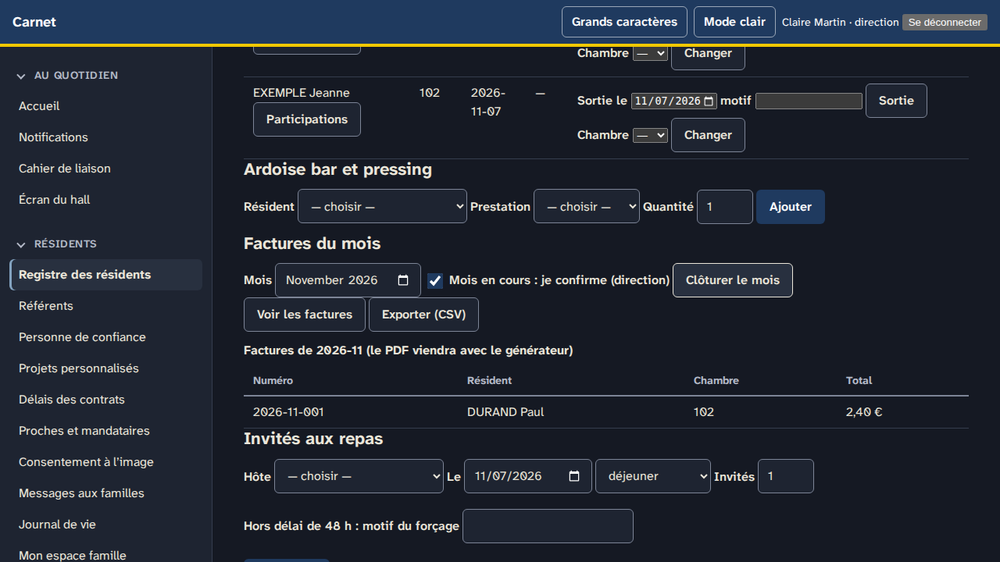
- 00s Fin de mois : la responsable administrative clôture les ardoises. Le mois en cours exige la confirmation de la direction.
- 09s Une facture numérotée sans trou par ardoise non vide ; l’export CSV alimente l’outil de facturation existant. Le PDF viendra avec le générateur.
Enregistré le 2026-11-07
Sprint 7 — Services · story 7.1 — Créneaux de laverie et remise de la clé (FR-200)
La laverie et sa clé, sans le planning de mémoire au comptoir
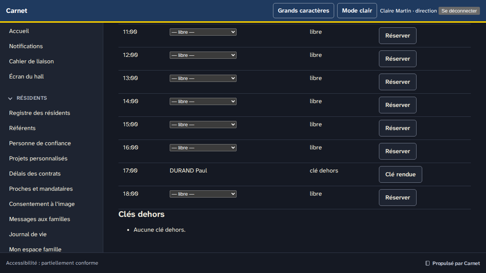
- 00s Madame Exemple demande la laverie au comptoir : l’accueil réserve le créneau pour elle.
- 12s Un ticket en grands caractères pour elle, la clé tracée — remise, puis rendue. Une clé oubliée apparaît dans les « clés dehors ».
Enregistré le 2026-11-07
Sprint 7 — Services et maintenance · story 7.4 — Cahier de liaison jour / nuit, hors santé (FR-203)
La nuit transmet, le jour sait, sans cahier papier
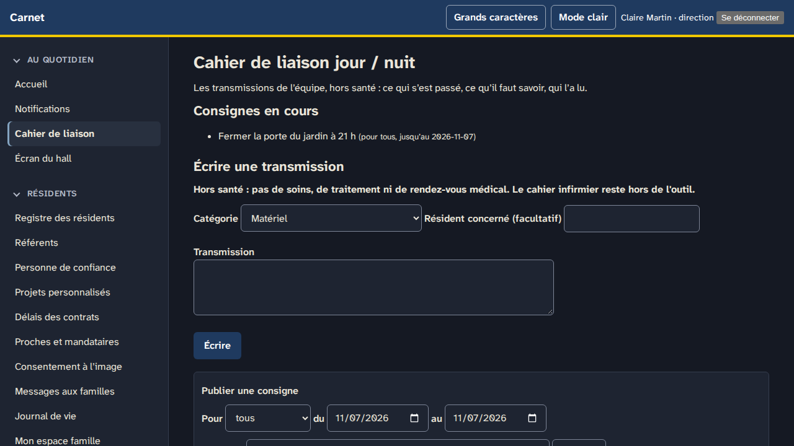
- 00s La nuit, la veilleuse écrit ses transmissions. Le cahier rappelle la frontière : hors santé, rien sur les soins.
- 10s Le matin, l’équipe de jour la lit et en accuse lecture ; ce que personne n’a lu depuis 24 h remonte en tête.
- 20s La gouvernante publie une consigne pour une équipe, valable sur une période.
Enregistré le 2026-11-07
Sprint 7 — Services et maintenance · story 7.5 — Registre des réclamations (FR-204)
Chaque réclamation reçoit sa réponse, et la preuve reste
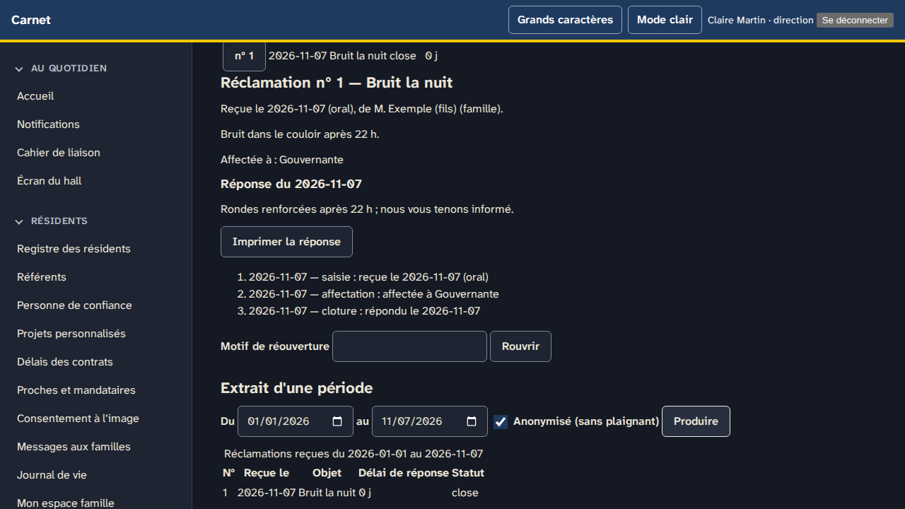
- 00s Le fils d’une résidente se plaint du bruit la nuit : l’accueil enregistre la réclamation, elle reçoit un numéro.
- 17s Affectée à la gouvernante, close avec sa réponse, imprimable pour la remettre en main propre.
- 25s Pour le CVS ou l’évaluateur : l’extrait de la période, avec le délai de réponse, sans nom si on le souhaite.
Enregistré le 2026-11-07
Sprint 8 — Familles & communication · story 9.3 — Consentement à l’image (FR-212)
Savoir, avant toute photo, qui peut apparaître
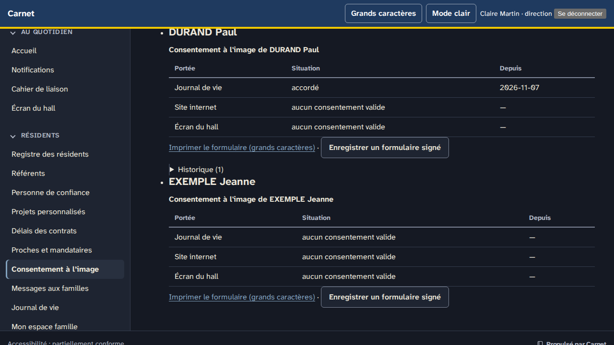
- 00s Pour chaque résident, trois portées : le journal de vie lu par les proches, le site, l’écran du hall. Sans formulaire signé, « aucun consentement valide ».
- 06s Le formulaire s’imprime en grands caractères ; le résident coche et signe à la main, sans jamais utiliser d’écran.
- 14s Le formulaire numérisé est enregistré : le journal de vie est accordé. Un retrait s’ajoute à l’historique, rien n’est effacé, et les publications futures sont bloquées.
Enregistré le 2026-11-07
Sprint 8 — Familles & communication · story 9.2 — Espace famille / mandataire (FR-211)
Des nouvelles sans téléphoner à l’accueil
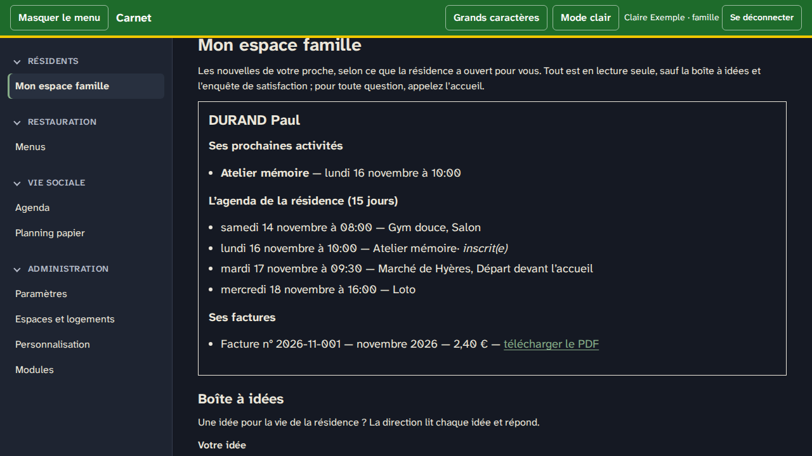
- 00s Claire ouvre le lien reçu par courriel : phrase de passe et second facteur, comme le personnel.
- 15s Son espace montre les activités de son parent, l’agenda des 15 prochains jours et ses factures en PDF : rien d’autre, en lecture seule, en grands caractères.
- 21s Chaque lecture de facture est tracée ; si l’accès est révoqué ou expire, l’espace se vide à la requête suivante.
Enregistré le 2026-11-07
Sprint 8 — Familles & communication · story 9.7 — Boîte à idées (FR-216)
La boîte à idées : de la feuille au hall
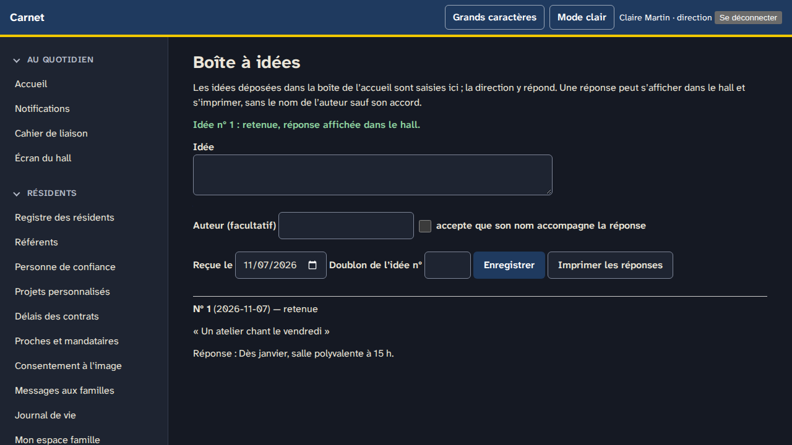
- 00s Une idée glissée dans la boîte de l’accueil est saisie et numérotée ; l’auteur peut rester anonyme.
- 10s La direction répond : la réponse s’affiche dans le hall, sans le nom de l’auteur sauf son accord, et s’imprime.
Enregistré le 2026-11-07
Sprint 8 — Familles & communication · story 9.4 — Journal de vie avec contrôle des consentements (FR-213)
Partager une photo sans jamais enfreindre un refus
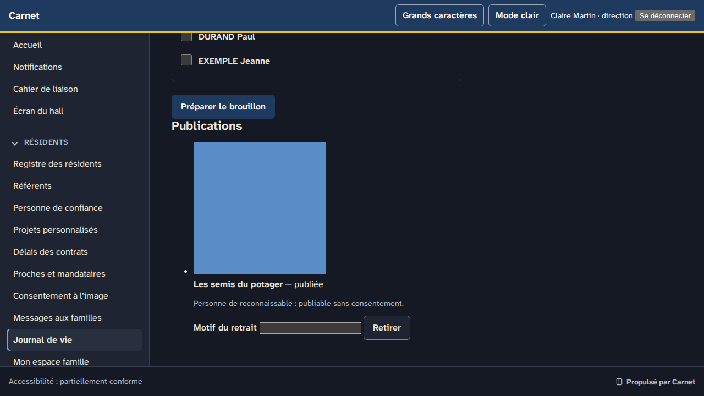
- 00s Photo, légende, puis les résidents reconnaissables : le flux de l’animatrice.
- 09s Avant de publier, Carnet vérifie le consentement « journal de vie » de chaque résident reconnaissable. Un seul refus, et la publication est bloquée avec son nom.
- 17s La photo, ré-encodée sans ses métadonnées, n’est servie qu’aux proches autorisés. Si un consentement est retiré, elle passe « à revoir » et disparaît des espaces famille.
Enregistré le 2026-11-07
Sprint 8 — Familles & communication · story 9.5 — Messages groupés aux familles (FR-214)
Informer toutes les familles en une fois
- 00s La sortie au marché est annulée : au lieu d’appeler chaque famille, la direction écrit un seul message.
- 10s Le brouillon ne part pas tout seul : il faut un clic humain, même s’il a été préparé par l’assistant.
- 18s Chaque proche reçoit son propre courriel, sans voir les autres adresses, et le retrouve dans son espace. Les résidents sans proche sont signalés pour une information papier.
Enregistré le 2026-11-07
Sprint 8 — Familles & communication · story 9.1 — Rattacher une famille ou un mandataire à un résident (FR-210)
Un accès pour la famille, sans ouvrir plus que nécessaire
- 00s La responsable administrative choisit le résident, saisit le proche et coche ce qu’il peut voir : l’agenda, le journal de vie, les factures… rien d’autre.
- 08s Le proche reçoit une invitation : mot de passe et second facteur, comme le personnel. Un courrier s’imprime pour le résident, qui peut s’opposer d’un mot à l’accueil ; la révocation coupe l’accès tout de suite.
Enregistré le 2026-11-07
Sprint 8 — Familles & communication · story 9.6 — Enquête de satisfaction (FR-215)
L’enquête de satisfaction, du papier aux résultats
- 00s La direction prépare le questionnaire : il s’imprime en grands caractères. L’accueil saisit les réponses rendues sur papier, anonymes par défaut.
- 20s Moyennes, répartitions et textes libres, sans lien vers un répondant ; le tableau de bord en tire l’indicateur de satisfaction.
Enregistré le 2026-11-07
Sprint 7 — Services et maintenance · story 8.3 et 8.4 — Tickets de maintenance (FR-206, FR-207)
Une panne signalée ne se perd plus
- 00s Au comptoir, une résidente signale que son radiateur ne chauffe plus : l’accueil déclare le ticket pour elle, sans la nommer.
- 10s Le ticket est numéroté et la maintenance est prévenue. Le numéro va sur l’accusé remis à la résidente.
- 26s Priorisé, intervention tracée, clos avec compte rendu : l’accueil peut répondre à la résidente, et la preuve reste au journal.
Enregistré le 2026-11-07
Sprint 9 — Registre de conformité · story 10.12 et 10.13 — Registre de conformité, rappels d’échéance (FR-217, FR-218)
Trente-cinq obligations, plus aucune de mémoire
- 00s La direction importe les 35 obligations légales de la résidence : projet d’établissement, DUERP, ascenseurs, légionelle…
- 10s Chacune a son responsable et sa règle d’échéance ; les échues remontent en tête avec leurs jours de retard. Des rappels partent à J-60, J-30 et J-7, une seule fois chacun.
- 22s La mise à jour du DUERP est enregistrée avec sa preuve : la prochaine échéance est recalculée depuis la date réelle.
Enregistré le 2026-11-07
Sprint 9 — Registre de conformité · story 10.14 à 10.16 — Conseil de la vie sociale (FR-219 à FR-221)
Le CVS : mandats, convocation à J-8, compte rendu validé
- 00s Les membres du conseil de la vie sociale ont un mandat : collège, fonction, début et fin. Un seul président à la fois.
- 16s La convocation part au moins 8 jours avant, ordre du jour compris, et s’annonce sur l’écran du hall. Après la séance : compte rendu, validation du président, publication.
Enregistré le 2026-11-07
Sprint 9 — Registre de conformité · story 10.24 — Tableau de bord des indicateurs qualité (FR-318)
Les indicateurs qualité calculés, sans tableur
- 00s Obligations échues, réclamations, événements indésirables, CVS, prévention : chaque indicateur est calculé depuis son module, par mois ou par année.
- 06s « Non mesuré » quand la période est vide, « non disponible » quand le module reste à venir ; chaque carte renvoie à sa source.
Enregistré le 2026-11-07
Sprint 9 — Registre de conformité · story 10.22 et 10.23 — Échéances employeur et attestations d’honorabilité (FR-227, FR-228)
Entretiens de parcours et attestations d’honorabilité, sans dossier RH
- 00s Une référence par salarié ou bénévole, jamais de donnée de santé. L’échéance des attestations d’honorabilité se compte sans nom.
- 15s L’attestation : le fait et la date, jamais le document. L’entretien de parcours fixe la prochaine échéance.
Enregistré le 2026-11-07
Sprint 9 — Registre de conformité · story 10.20 — Plan bleu / PCA, partie non nominative (FR-225)
Le plan bleu à jour, imprimable, sans liste nominative
- 00s Procédures, fiches réflexes, pièce rafraîchie, inventaire, contacts : la direction valide une version, qui devient la seule en vigueur.
- 14s À l’impression, la liste nominative des résidents est remplacée par un renvoi au poste local : elle ne quitte jamais l’établissement.
Enregistré le 2026-11-07
Sprint 9 — Registre de conformité · story 10.21 — Traçabilité des actions de prévention (FR-226)
Le forfait autonomie justifié, action par action
- 00s Chaque action de prévention est tracée : intitulé, intervenant, coût, financement, et le nombre de participants, jamais leurs noms.
- 13s Le bilan de l’année se constitue tout seul ; exporté en CSV, sa remise réalise l’obligation au registre de conformité.
Enregistré le 2026-11-07
Sprint 9 — Registre de conformité · story 8.6 — Relevés sanitaires périodiques et fichier sanitaire (FR-209)
Le fichier sanitaire tenu point par point, chaque mois
- 00s Chaque point de puisage du bâtiment est déclaré ; la maintenance relève les températures chaque mois, les analyses chaque année.
- 12s Un relevé non conforme ouvre un ticket de maintenance et alerte la direction ; le fichier de l’année s’exporte.
Enregistré le 2026-11-07
Sprint 9 — Registre de conformité · story 10.18 et 10.19 — Signalement d’un dysfonctionnement grave (FR-223, FR-224)
Le signalement grave : une fiche anonyme, transmise par la direction
- 00s La direction rédige la fiche destinée à l’ARS. Un nom du registre des résidents ou un numéro de chambre est repéré avant l’enregistrement.
- 10s Le terme est cité avec sa position : on anonymise, ou l’on justifie un faux positif.
- 21s La fiche se télécharge en PDF : c’est la direction qui l’envoie elle-même.
- 28s L’outil n’envoie rien : il garde la date et le canal de la transmission, alerte si la confirmation écrite manque après 48 h, puis suit le CVS et les actions correctives.
Enregistré le 2026-11-07
Sprint 9 — Registre de conformité · story 8.5 — Vérifications périodiques du bâtiment (FR-208)
Le registre de sécurité, à jour avant la commission
- 00s La maintenance tient les vérifications périodiques : ici, le contrôle quinquennal des ascenseurs.
- 16s Prestataire et rapport joints : la prochaine échéance, à cinq ans, rejoint le registre de conformité et ses rappels.
Enregistré le 2026-11-07